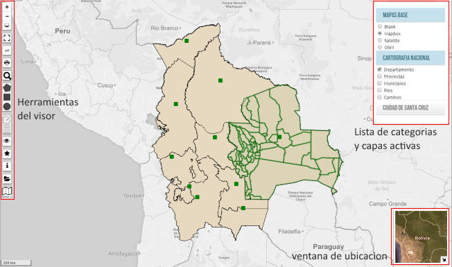
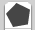
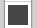
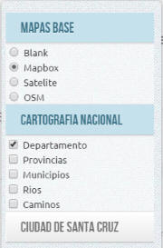

Listado de capas agrupadas
por categorias.
Todas las capas cargadas mediante las herramientas
, se
listan aqui para su despliegue en el visor.
CCada capa puede ser activada o desactivada
VISOR GEOGRAFICO
El Instituto Cruceño de Estadística ICE, tiene como uno de sus objetivos levantar información cartográfica del Departamento de Santa Cruz.
Cumpliendo este objetivo, en las gestiones 2013 y 2014 el instituto ha realizado un trabajo de campo para levantar información cartográfica y alfanumérica de los municipios de Santa Cruz.
El visor geográfico es el medio para la difusión de todo este trabajo y ponerlo a consideración de profesionales del sector y usuarios en general para su uso y perfeccionamiento.
Esta plataforma esta en proceso de desarrollo y pretende ser el medio interactivo para mostrar graficamente el departamento de Santa Cruz, en cartografía e información estadística.
ENTORNO

El visor tiene un entorno intuitivo y simple, a la izquierda se encuentran las herramientas de visualización y a la derecha el menú o listando de capas o coberturas activas.
HERRAMIENIENTAS
| acerca el punto de vista | ||
| aleja el punto de vista | ||
| pasa a modo pantalla completa | ||
| delimitación interactiva de una ventana para acercar la visualización | ||
| medición mediante dos o mas puntos | ||
| impresión, interface de windows | ||
| busqueda sobre capa activa | ||
|  | dibuja un polígono | |
|  | dibuja un cuadrado | |
| dibuja un circulo | ||
|
edición de dibujos por vértices | |
| borra dibujos | ||
| zoom extensivo de lo que se esta visualizando | ||
|
ubica un punto interactivo y marca las actividades a su alrrededor | |
| despliega la ventana de información del sistema | ||
| cargar una capa de información externa, en formato geojson y kml | ||
| despliega la ventana para cargar las categorias de información deseadas | ||
|  |
Listado de capas agrupadas
por categorias. CCada capa puede ser activada o desactivada |
|
INFORMACION
En esta primera versión, el visor mostrara la siguiente información cartográfica:
Mapa de Bolivia con división política por departamentos
Mapa de Bolivia con división políticapor municipio
Mapa hidrográfico a nivel nacional
Mapa de caminos a nivel nacional
Mapa de comunidades a nivel nacional
Mapas por municipio
Mapas la ciudad de Santa Cruz de la Sierra, división de distrito, uv, manzana
Capas categorizadas por actividad económica.
FUENTES
La información que muestra el visor tiene diferentes fuentes:
Mapa de comunidades a nivel nacional, catalogo de geobolivia.net* basado en información del INE CNPV2012
Mapa de división política, departamentos, provincias, municipios, catalogo de geobolivia.net basado en información del Ministerio de Autonomías con datos actualizados a abril de 2015 solo referencial.
Mapa hidrográfico, catálogo geobolivia.net basado en informacion producida por el Sistema de Información Territorial de Apoyo a la Producción (SITAP)
Mapa de camninos, basado en información producida por el Sistema Único Nacional de Información de la Tierra (SUNIT)
Mapa de distritos de la ciudad de Santa Cruz de la Sierra, Gobierno Autónomo Municipal de Santa Cruz de la Sierra.
* GeoBolivia depende del Vicepresidencia del Estado Plurinacional y es el nodo iniciador de la Infraestructura de Datos Espaciales del Estado Plurinacional de Bolivia (IDE-EPB) una red de instituciones que busca compartir, de manera fácil y gratuita, información ligada al territorio nacional y procedente de diferentes fuentes para distintos fines.
OTRAS FUENTES DE DATOS
Gobierno Autónomo de Santa Cruz
Imágenes Bing Maps
Imágenes Google Earth
FICHAS TECNICAS
Son cuadros elaborados en base a información estadística propia o de otras instituciones que generan información relevante y que se muestran a nivel de departamento, provincia o municipio.
En esta primera versión del sistema aun no se cuenta con todas estas fichas, pero se iran elaborando y publicando paulatinamente .


GENERACION DE CUADROS
El visor puede generar gráficos estadísticos a partir de la información mostrada, permitiendo descarga, exportar o imprimirla.